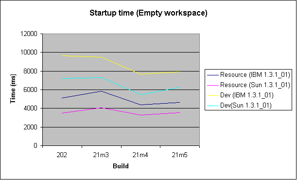
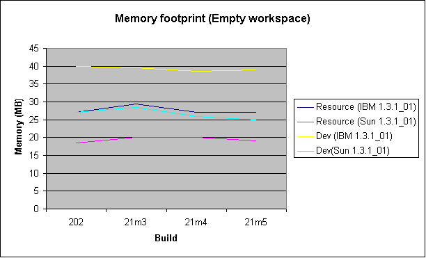
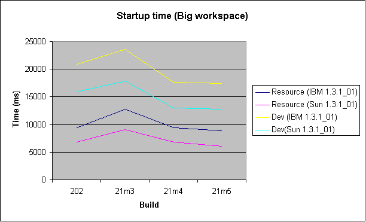
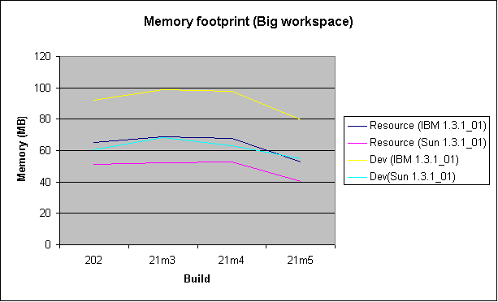
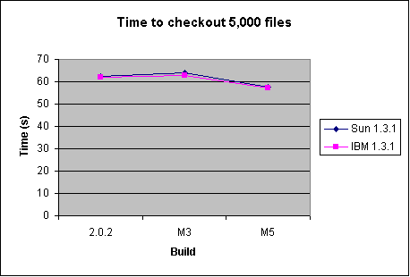
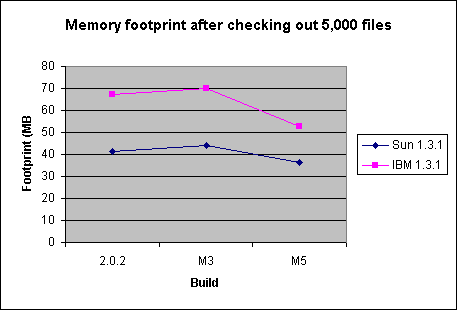

smaller, faster, scalable

| 2.1 M5 performance
smaller, faster, scalable |
|
| Performance in Eclipse 2.1 M5 |
|
Performance continues to be a strong focus for Eclipse development. The passing of the M5 milestone gives us a chance to check progress and look for additional opportunities/directions. Individual components are creating and running "unit benchmarks" (similar to unit tests) to test their performance. Below is a set of scenario-based benchmarks which try to capture some performance from the user's perspective. Eclipse is a large, complex system so overall benchmarks are difficult and sensitive. The data shown here should be treated accordingly. |
| Methodology |
Terminolgy
Setup and procedures
|
| Scenario: Empty workspace startup |
|
This scenario models a user starting Eclipse where the workspace is empty. For example, the first startup. Within this scenario there are two workbench configurations:
All tests were warm runs on a 2GHz P4 512MB. The tests track startup time as well as memory footprint for runs on two different Java VMs over several different builds of Eclipse. Summary: Startup time increased slightly from M4 while footprint dropped slightly. While this is unfortunate, the performance work was focused more on scalability rather than minimal footprint/startup time in the trivial cases. The platform team is aware of several areas where this base overhead can be reduced but the risk is too high to include those changes for 2.1.   |
| Scenario: Big workspace startup | |
|
This scenario models a user starting Eclipse on a large working set. The "big workspace" is used. Within this scenario there are two workbench configurations:
All tests warm runs on a 2GHz P4 512MB. The tests track startup time as well as memory footprint for runs on two different Java VMs over several different builds of Eclipse. Summary: Startup times continued their downward trend from M4 with single digit percentage improvements. Memory footprint showed strong improvement with a 15-20% drop. This translates into tangible drops of 10-15MB!   |
|
| Scenario: Checkout 5000 files from CVS | |
|
This scenario models a user loading many projects/resources from a local CVS repository. The test was done starting with an empty workspace with the Java perspective open, autobuild off and CVS decorations on. Using the CVS Repository view, 30 plug-in (i.e., Java) projects were selected and checked out. This downloaded some 5000 resources and performed all updates. Java building was not done as autobuild was turned off. (side note: separate timings of Java building shows that M5 performance is comparable with 2.0.2 in both speed and space). The times measured are elapsed wallclock time and the memory footprint is the total Java projects "VM Memory" as reported by the Windows Task Manager. The results given are the average of six runs. Summary: M5 is roughly 9% faster and 14-28% slimmer than 2.0.2 depending on the Java VM used. While this result is in itself promising, there is further good news. The measurements for individual runs were more stable/repeatable on M5. This is often an indication of reduced garbage creation. We also noted that eventhough execution time is dominated by network I/O (which remained constant), there were still substantial improvements.   |
|